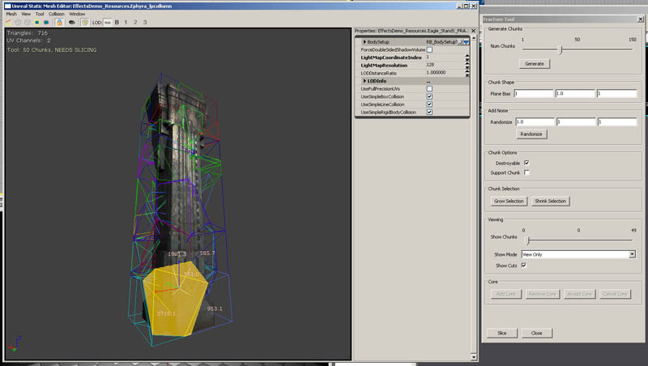
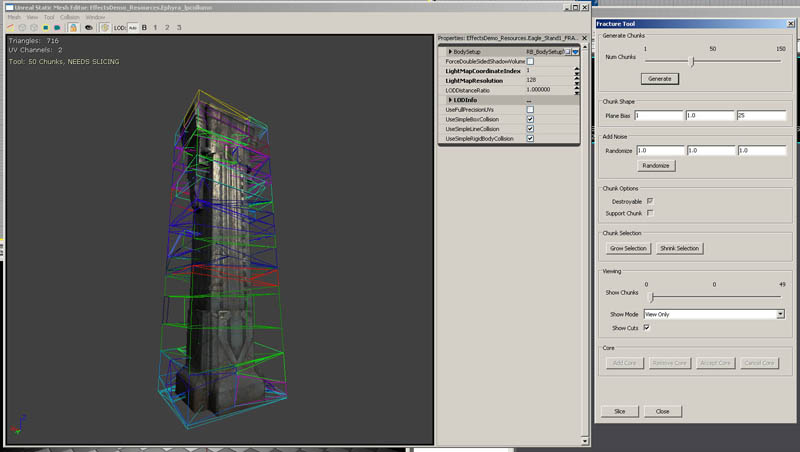
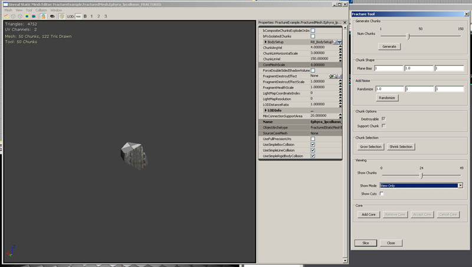
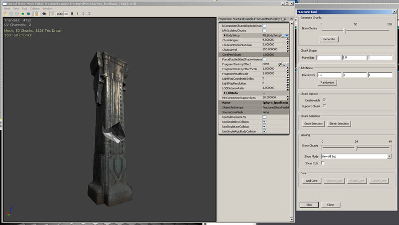
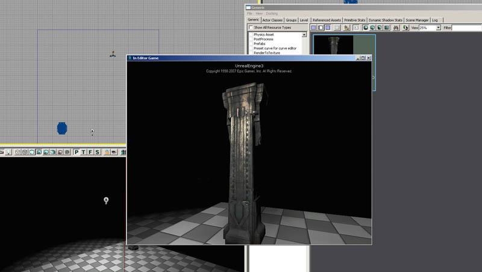
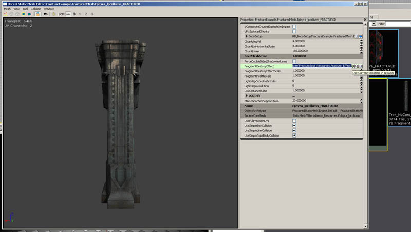

UDN
Search public documentation:
FractureToolJP
English Translation
中国翻译
한국어
Interested in the Unreal Engine?
Visit the Unreal Technology site.
Looking for jobs and company info?
Check out the Epic games site.
Questions about support via UDN?
Contact the UDN Staff
中国翻译
한국어
Interested in the Unreal Engine?
Visit the Unreal Technology site.
Looking for jobs and company info?
Check out the Epic games site.
Questions about support via UDN?
Contact the UDN Staff
フラクチャー ツール
ドキュメントの概要: UnrealEd? エンジン 3 のフラクチャー ツールの機能と使用法の解説。 ドキュメントの変更ログ: Alan Willard により作成。James Golding により更新概要
このドキュメントでは、Fracture (フラクチャー : 破断、亀裂やひび割れの意味) ツールの使い方について、レベル内のアセット作成から配置や用法に至るまで、基本的な要素を取り上げて説明します。フラクチャ ツールの基礎
フラクチャー ツールは、Unreal Engine 3 の 2007 年 12 月 QA ビルドに追加された機能です。このツールにアクセスするには、Static Mesh Browser (静的メッシュ ブラウザ) で静的メッシュを開き、[Tool] (ツール) -> [Fracture Tool] (フラクチャー ツール) を選択するか、または [Fracture] ツールボタン (黄色のワイヤフレーム オブジェクト) を押します。このメッシュのフラクチャーに関するオプションを含むダイアログボックスが開きます。各オプションの値を適切に設定してから、ダイアログ下の [Slice] (スライス) ボタンをクリックするとフラクチャーが実行され、破断により新たに生成されるメッシュの格納先パッケージ/グループの指定を求められます。スライス パターンが生成され、オブジェクトの衝突ジオメトリ全体にメッシュ ポイントが散在し、各点に基づいて断片 (ピース) が生成されます。
フラクチャー メッシュの作成方法
選択とウィジット
チャンクの原点 (および対応するチャンク) は、スライス パターン内で個別に選択したり、画面に表示されるウィジットを使って移動することができます。チャンクを選択すると現れるラインは隣接するチャンクを表わし、これにより破断されるメッシュの構造を視認することができます。各数字はこれらの近傍要素との「接触面積」を意味し、ピンクの線は、選択したチャンクの外部ジオメトリとの「平均表面法線」を意味し、ピースを分割するときに使用されます (下図参照)。
Chunk Count
静的メッシュを開いて [Feature] ダイアログを表示すると、ツールの一番上にはChunk Countを設定するスライダがあります。これにより、元のメッシュをいくつのピースに切断するかを決定します。これは視覚的な効果とパフォーマンスのバランスに最も明らかに反映される設定で、Chunk Count を高く設定すると、最終オブジェクト内の三角形の数だけでなく、メッシュの分断により生成されるアクタの数も多くなることを意味します。数値を小さくすると、新たにスポーンされるアクタの数も三角形の数も少なくなることを意味しますが、全体的な亀裂の数が少ないため、オブジェクトが分断されたときの視覚効果も減少します。
Plane Bias
フラクチャー ツールの次の値セットは、Plane Bias です。フラクチャー面の XYZ 軸をスケーリングして、入力値に応じてスライスの幅を広くまたは狭くします。下のスクリーンショットでは 1 つまたは 2 つの軸のスケール値が大きく設定されているため、均等サイズのチャンクというよりも厚切りのスライスに切断されています。この設定は異なるマテリアル タイプの割れ目を作成する場合に便利で、例えば木を扱う場合に、岩のメッシュに使うような標準の形に近い断片ではなく、細長の裂片にすることができます。
Modify Points
modify point ツールはオブジェクトの選択した(またはすべての)境界に向かっているチャンクの始点を移動するか、スライスパターンで摂動するかのいずれかに使用されます。境界に向かっているチャンクの始点を移動することは、メッシュのサーフェスをスライスしないため、多大な量のチャンクが破棄されてしまうのを防ぐのに有益です。始点を摂動することは、直線すぎにエリアをカットしてしまうのを防ぐのに役に立ちます。まず、XYZの最大移動値を示すためにエントリーボックスを使用し、 チャンクを中央に揃え、新しいスライスパターンを見るため、[Move to Faces](フェースに移動)または[Randomize](ランダム化)ボタンを押します。複数のチャンクを選択した場合、選択したセットのみが変更されます。
Chunk Options (チャンク オプション)
[Chunk Options] (チャンク オプション) 下の 2 つのチェックボックスでは、チャンクをその親メッシュから破断可能にするかどうか、メッシュの本体とつながっていることを確認できるかどうかをそれぞれ制御します。[Destroyable] (破壊可能) チェックボックスでは、衝撃に反応してチャンクが元のメッシュから破断されるかどうかを指定します。このチェックボックスがオフの場合、ダメージや通常なら破断を引き起こすその他の衝撃に対してチャンクは反応しません。 [Support Chunk] (サポート チャンク) チェックボックスは、メッシュ内に錨のような役割を果たす「アンカー」を作成するのに使用します。例えば、このフラグをオンにしたチャンクと、それに接続する一連のチャンク組織からメッシュを構成します。あるチャンクがまだメッシュから離されていなくても、この組織とのつながりをなくしたために、サポートチャンクの位置を確認できなくなった場合、そのチャンクは物理的な動作が可能になります。この使用例には、土台部分の [Support Chunk] フラグをオンにした柱があります。柱の真ん中の部分が取り外されたとします。柱の上部は直接その作用を受けていませんが、元のメッシュの下部のサポートチャンクとの接続を失ってしまったので落下します。この設定は、メッシュ プロパティの bCompositeChunksExplodeOnImpact (衝撃時に炸裂する合成チャンク) フラグと組み合わせることができ、このフラグをオンにすると、アンカーとの接続を失ったチャンクの塊は、次にワールドとの衝突が起きたときにバラバラに崩れます。柱の上部の例では、地面に墜落した途端にその部分を構成していたチャンクがバラバラに飛び散ります。これは、大規模な物理オブジェクトをワールド内でシミュレート場合に、その量を削減するのに役立ちます。Chunk Selection(チャンク選択)
[Chunk Selection] (チャンク選択) ボタンは、現在選択されているチャンクのセットを拡大または縮小するのに使用します。これらのボタンが機能するには、少なくとも 1 つのチャンクが選択されていなければなりません。チャンクを選択した状態で、ウィジットを使いのチャンクの中心を移動することができます。移動に伴い、メッシュの割れ目が再計算されます。
Viewing(表示)
[Viewing] (表示) オプションには、表示を限定できるように 3 つのオプションが用意されています。[View Only] (表示のみ) は、スライダの現在位置に対応するチャンクのみ表示し、[View All But] (スライダ位置以外を表示) は、スライダの位置に対応するチャンク以外のチャンクをすべて表示します。[View Up To] () は、スライダの現在位置以下のチャンクのみ表示します。チャンクを生成する元のワイヤフレームのスライス パターンがレンダリングされないようにするには、[Show Cuts] (カット面を表示) チェックボックスをオフにします。


頂点カラー
メッシュをスライス時、メッシュの内部フェースには適用された頂点アルファがあります。頂点がメッシュの元のサーフェスにあるサーフェスで共有する場合は、頂点アルファは1に設定され、他の全頂点は、頂点アルファが0に設定されます。フラクチャの深度を基にしたマテリアルでの値の変化に使われます。UVs
メッシュにlightmap 座標セットがあり、有効なLightMapResolutionがある場合、エンジンは元のUVチャンネルのレイアウトを使い自動的にメッシュのlightmap UVを生成します。元のlightmap UVs は若干スケールされ、新しいフラクチャされたトライアングルは、空のスペースで配置されます。フラクチャメッシュの便利なテクニックは、新しく作成された内部フェースに適用したマテリアルの座標としてUVセットを使うことです。通常、内部フェースに適用されたマテリアルの!TextureCoordinate ノードで使用されます。この時の!TextureCoordinate の値は0以上で設定します。コア
フラクチャー メッシュのコア (中核部) は、フラクチャー メッシュに結合可能な独立した静的メッシュで、フラクチャー オブジェクトの内部ストラクチャとしてこれを使用します。コアメッシュは少なくとも 1 つのチャンクが外れるまで描画されません。フラクチャー メッシュにコアメッシュを追加するには、汎用ブラウザで有効な静的メッシュを選択し、[Add Core] (コアを追加) ボタンをクリックします。このメッシュのインスタンスがビューアに追加され、オブジェクトを移動およびスケールできるようにウィジットが現れます。この状態でスペース バーを押して、並進 (移動) またはスケール モードに切り替えることができます。スケール モードで、SHIFT キーを押したままいずれかの軸をドラッグすると、コアメッシュは均等にサイズ変更され、SHIFT キーを押さえずに軸をドラッグすると、その軸に沿って拡大または縮小します。 フラクチャー メッシュから 1 つでもチャンクが外れると同時にこのオブジェクトが見えるようになるので、これをフラクチャー メッシュのジオメトリ内部に完全に納まるようにしてください。コアメッシュを適切な位置に配置してサイズを変更したら、[Accept Core] (コアを容認) をクリックすると、コアを考慮して亀裂が計算し直されます。追加したコアメッシュを除外するには、[Remove Core] (コアを除外) ボタンをクリックします。1 つのフラクチャー メッシュには 1 つのコアメッシュしか追加できません。

スライス
[Slice] (スライス) ボタンは、現在のスライス パターンに基づいて実際にメッシュを変化させ、新しいポリゴン フェイスを計算するのに使用します。このボタンをクリックすると、ダイアログボックスが開き、フラクチャーにより生成される静的メッシュを配置するパッケージの選択を求められます。これがフラクチャー ジオメトリ作成の最後のステップで、この時点でメッシュの新しい UV が生成されます。新規作成されたフェイスはすべて、新しいマテリアル (デフォルトでは空のマテリアル) にマッピングされます。外部ジオメトリを含まないチャンク (メッシュの内側に完全に収まっているチャンク) は、ポリゴンを節約するために破棄されます。
ワールドにフラクチャー メッシュを配置
フラクチャー メッシュを作成しパッケージに格納したら、これをワールドに配置することができます。汎用ブラウザで目的のフラクチャー メッシュを見つけて選択します。ワールドを右クリックし、[Add Actor] (アクタを追加) -> [Add FracturedStaticMesh] を選択します。このフラクチャー メッシュがワールドに配置され、操作できるようになります。
 注意 : メッシュがダメージの影響を受けるためには、DamageType (ダメージタイプ) クラスの bCausesFracture (フラクチャーを引き起こす) フラグを TRUE に設定する必要があります。
注意 : メッシュがダメージの影響を受けるためには、DamageType (ダメージタイプ) クラスの bCausesFracture (フラクチャーを引き起こす) フラグを TRUE に設定する必要があります。
フラクチャー メッシュのオプション
bCompositeChunksExplodeOnImpact - このフラグは、サポートチャンクとして設定された任意のチャンクからフラクチャー メッシュの一部分が切り離された場合に、その部分が完全性を維持するかどうかを決定します。フラグが True の場合、サポート チャンクとの接続を失って崩れたフラクチャー メッシュ部分は、ワールドに接すると個別のチャンクに粉々に砕け散ります。 bFixIsolatedChunks - このフラグが True の場合、フラクチャー メッシュはサポート チャンクとの接続関係を無視し、各チャンクを個別に扱います。つまり、すべてのチャンクはフラクチャー メッシュ内の他のチャンクとの接続関係に関係なく、離されるまで同じ位置にとどまります。 ChunkAngVel - メインのフラクチャー メッシュから切り離されたチャンクに与えられる角運動 (回転) 速度の量を表わします。 ChunkLinHorizontalScale - 断片が吹き飛ばされる場面で、垂直移動に対して水平移動にバイアスをかけるのに使用します。値が高いほど水平速度が上昇します。 ChunkLinVelocity - チャンクが切り離されたときにに与えられる、メッシュから離れる速度の量。チャンクの移動方向は、元の外部ジオメトリの表面法線の平均により決まります。 DynamicOutsideMaterial – スポーンされた動的部分のOutsideMaterialIndex により与えられたセクションのマテリアルとして設定されます。 ExplosionChanceOfPhysicsChunk – この値は、爆破ダメージのため、フラクチャ上で物理チャンクがスポーンされるチャンスをスケールします。 ExplosionPhysicsChunkScaleMax – 爆破ダメージでスポーンされる物理チャンクの最大スケール。 ExplosionPhysicsChunkScaleMin – 爆破ダメージでスポーンされる物理チャンクの最小スケール。もし!ExplosionPhysicsChunkScaleMax と!ScaleMin が両方同じ場合は、変動がありません。 ExplosionVelScale – 爆破による分離が発生したときに、スポーンされる断片の速度に適用されるスケール FragmentDestroyEffect - このフィールドにパーティクル システムを入力すると、元のフラクチャー メッシュから分離したチャンクの中央に、このパーティクル システムがスポーンされます。このエフェクトは X が放出方向を指すように方向づけられ、落下する断片に関連付けられます。
 FragmentDestroyEffectScale - パーティクル システムがスポーンされたときに FragmentDestroyEffect に適用される一定のスケール。
FragmentHealthScale - フラクチャー 静的メッシュから分離するために必要なダメージのデフォルト量をこれで調整します。各チャンクの体力はそのサイズに基づきます。
MinConnectionSupportArea - 2 つのチャンクがつながっていると見なされるために、共有しなければならないサーフェス面積の量。この設定値によって、フラクチャー メッシュ内のチャンクがサポートチャンクにつながっているかどうかが決定されます。
ExplosionVelScale - 爆破による分離が発生したときに、スポーンされる断片の速度に適用されるスケール。
bSpawnPhysicsChunks - デフォルト値は TRUE。FALSE の場合、断片を撃ち落としても物理的ピースはスポーンされません。ただし、FragmentDestroyEffect は適用されます。
DynamicOutsideMaterial - このマテリアルを設定した場合、スポーンされた物理的ピースの Material[0] として適用されます。
FragmentDestroyEffectScale - パーティクル システムがスポーンされたときに FragmentDestroyEffect に適用される一定のスケール。
FragmentHealthScale - フラクチャー 静的メッシュから分離するために必要なダメージのデフォルト量をこれで調整します。各チャンクの体力はそのサイズに基づきます。
MinConnectionSupportArea - 2 つのチャンクがつながっていると見なされるために、共有しなければならないサーフェス面積の量。この設定値によって、フラクチャー メッシュ内のチャンクがサポートチャンクにつながっているかどうかが決定されます。
ExplosionVelScale - 爆破による分離が発生したときに、スポーンされる断片の速度に適用されるスケール。
bSpawnPhysicsChunks - デフォルト値は TRUE。FALSE の場合、断片を撃ち落としても物理的ピースはスポーンされません。ただし、FragmentDestroyEffect は適用されます。
DynamicOutsideMaterial - このマテリアルを設定した場合、スポーンされた物理的ピースの Material[0] として適用されます。
フラクチャー機能の制限事項
フラクチャー ツールは静的メッシュ上で機能しますが、複雑なジオメトリ形状では最適な結果を得られない場合があります。最適な結果が得られるのはオブジェクトが内部ストラクチャを持たない場合で、内部にフェイスを持つオブジェクトは、分割された内側部分に不正なフェイスを作成する可能性があります (この可能性は、相互貫通構造のフェイスを含むオブジェクト、またはチューブや空洞の立法体のように内部空間があるオブジェクトの場合に極めて高くなります)。技術情報
フラクチャー ツールは 3D Voronoi (ボロノイ) 分割計算を使用しています。各「チャンク」はそれぞれの原点に最も近い空間の体積表現です。 フラクチャーにより生成される静的メッシュのレンダリングコストは通常の静的メッシュの場合と同じで、同じタイプのプリコンピュート ライティングを使用します (ただし、頂点ライティングしかサポートしません)。ただし、ライティングの計算時にはセルフシャドウイングが無視され、その他の場合は内部フェイスはすべてブラックになります。ただし、以下に示すようにフラクチャー メッシュの使用に絡むコストが発生します。- メッシュのフラクチャーによるポリゴン/頂点数の増加。
- 頂点ライティング データの増加によるメモリ オーバーヘッド。
- インスタンスあたりのインデックス バッファのメモリ オーバーヘッド。
- 視認性状態の計算でインデックス バッファの再計算に時間を要する。
- スポーンされる、動的な物理的ピースのオーバーヘッド。これらは動的ライティングも使用します。